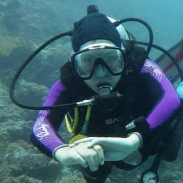

Scuba DivingInspired by her dad's stories of everything he's seen underwater, Lucy trained to become a scuba diver. She is now an Advanced Open Water Scuba Diver, certified by PADI, and has completed over 50 dives. Fun fact: Her favourite sea creature is the manta ray. |